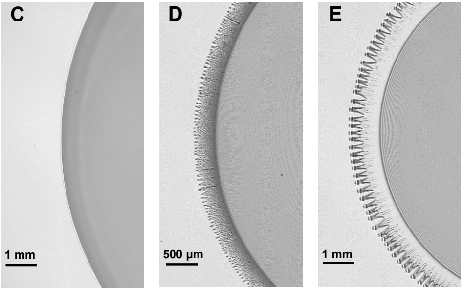
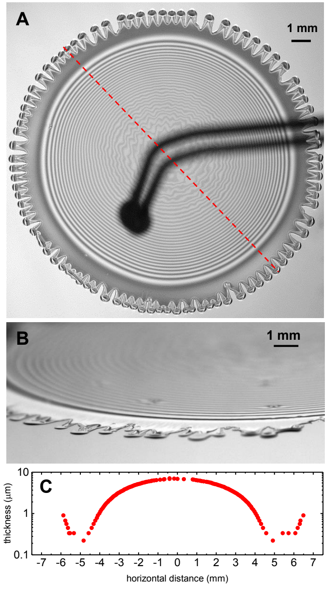
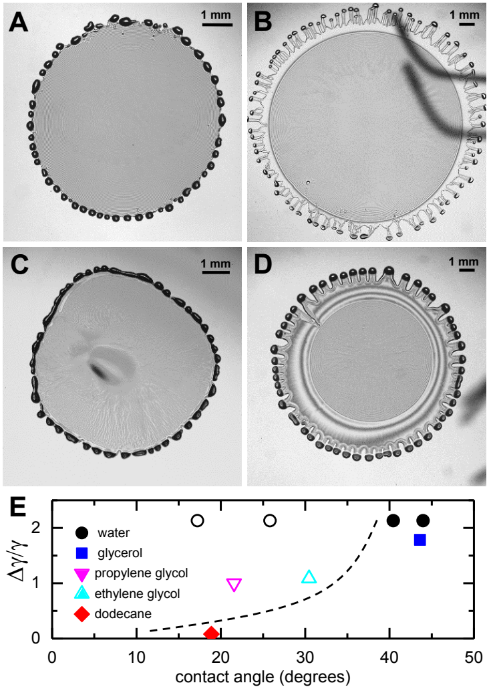

Research Theme
Contact-line dynamics
How evaporation and surface wetting turn a spreading drop into fingers, droplets, and films thinner than a micrometer.
01
Background

A drying drop can leave a surprisingly complex footprint. As liquid evaporates, dissolved material accumulates and flow reorganizes near the contact line, the boundary where liquid, air, and a solid surface meet. This behavior matters in natural drying processes, surface cleaning, and thin-film coatings. It also provides a foundation for understanding how fluids occupy mineral surfaces and narrow openings in rock. My undergraduate research examined drops containing two liquids that mix completely but evaporate at different rates. As the faster-evaporating solvent disappears, the slower-evaporating liquid concentrates near the edge. If that liquid has a higher surface tension, it pulls fluid outward along the surface, a process called Marangoni flow. Whether the edge develops fingers or breaks into droplets also depends on wetting: how readily the remaining liquid spreads across the solid. We combined controlled liquid mixtures, surface treatments, and optical measurements to connect these small-scale forces with the final deposit. The work showed how a trace ingredient or a modest change in surface chemistry can reorganize liquid across an area thousands of times wider than the film is thick.
02
Questions driving this work
- How much can a trace amount of a second liquid change the motion and stability of a spreading contact line?
- How do differences in evaporation rate and surface tension produce fingers, isolated droplets, or continuous films?
- How does the liquid's affinity for the solid surface determine the final deposition pattern?
- Can changing surface chemistry switch the behavior of the same liquid mixture?
- How thin and uniform are the deposited films, and do the same controls apply to highly viscous liquids?
03
Materials and methods

We deposited one-microliter drops on smooth silicon wafers in an enclosed chamber at ambient temperature and humidity. Isopropanol served as the volatile solvent. We mixed it with ethylene glycol, propylene glycol, dodecane, water, or glycerol to vary surface tension, evaporation rate, viscosity, and wetting behavior. These comparisons let us identify the physical controls shared by different mixtures.
We cleaned the wafers with isopropanol, dried them with nitrogen, and treated selected surfaces with oxygen plasma for 10–30 seconds. The treatment changed the surface's affinity for polar liquids. We measured each liquid's equilibrium contact angle, the angle its resting surface makes with the solid, to quantify wetting. A smaller angle indicates that the liquid spreads more readily. Comparing treated and untreated wafers let us change wetting while keeping the liquid mixture the same.
A camera recorded the spreading drops at a resolution of 6 micrometers per pixel under red light with a wavelength of 632 nanometers. Light reflected from the liquid surface and the underlying silicon combined to produce bright and dark interference bands. Counting these bands revealed thickness changes of roughly 113 nanometers between neighboring bright and dark bands. Tracking the bands as the remaining liquid eventually evaporated allowed us to recover the absolute thickness profile. Side-view images provided an additional check on the thin outer film.
We compared the observed deposition patterns using two quantities: the surface-tension difference between the liquids and the contact angle of the slower-evaporating component. This approach linked the flow that drives spreading with the surface forces that determine whether the deposited liquid remains connected.
04
Results

- Trace additions transformed the drop edge. Pure isopropanol spread with a smooth contact line. Adding just 0.1% ethylene glycol by volume produced small instabilities and ejected droplets ahead of the main drop. At 1%, distinct fingers formed along the edge.
- Evaporation drove flow through changes in composition. Isopropanol evaporated rapidly near the contact line, enriching the remaining liquid there. When that liquid had a higher surface tension, the resulting Marangoni stress pulled the interface outward and helped fingers grow.
- Fingers could draw out exceptionally thin films. With suitable mixtures and surface conditions, the fingers pulled a nearly uniform film behind them. Interference measurements resolved thicknesses near 200 nanometers, about one five-thousandth of a millimeter. The deposited film could cover nearly one square centimeter and persist after the isopropanol evaporated.
- Wetting controlled whether the film remained spread. Water-rich mixtures formed rounded droplets on clean silicon even with a large surface-tension difference. Oxygen-plasma treatment lowered water's contact angle from roughly 45° to 10° and enabled fingers and a thin film. A shorter treatment also stabilized ethylene glycol films that otherwise retracted.
- Weak surface-tension gradients produced a different deposition sequence. Dodecane and isopropanol have similar surface tensions. Their mixtures developed rounded beads at the edge, which the retreating drop left behind in ordered patterns. Once isopropanol vapor dispersed from the surface, the dodecane droplets merged into a thicker film.
- The same controls applied to highly viscous glycerol. Despite glycerol's viscosity being roughly a thousand times that of the other liquids, changing surface wetting switched its deposition from isolated droplets to fingers and a residual film.
- Two measurable properties organized the observations. A map of relative surface-tension difference and contact angle separated the observed film-forming and droplet-forming regimes. The boundary describes the tested mixtures and surfaces; it provides a framework for choosing conditions that produce a desired deposit.
05
Connections to my geophysics research
- Wetting links surface chemistry with fluid distribution. In pores and partially saturated fractures, contact angles and surface tension influence where fluids spread, which surfaces they contact, and how much fluid becomes trapped. This work provides a physical foundation for my research on CO2 storage, where gas, water, and mineral surfaces interact within complex rock geometry.
- Local changes can reorganize larger flow patterns. Evaporation concentrated one liquid at a moving edge and changed the deposit across the entire drop. My reactive-transport research examines a related feedback: reactions change mineral surfaces and openings, which alter fluid access and subsequent reaction. The contact-line experiments developed the controlled comparisons and quantitative imaging I now use to connect small-scale processes with measurable changes in rock and fluid behavior.
06